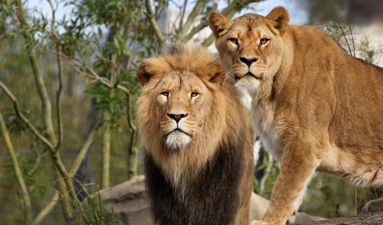
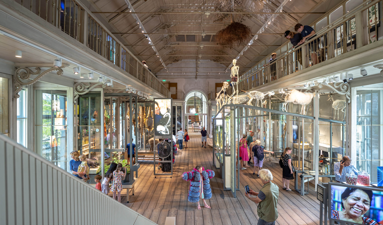
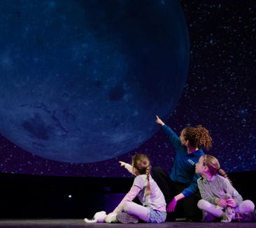

Artis
Carousel
-
Artis Park
In ARTIS-Park ontmoet je dieren en planten uit alle hoeken van de wereld, en geeft het Planetarium je een uniek perspectief.
-
Artis Groote Museum
In ARTIS-Groote Museum ervaar je de diepere samenhang tussen mens en natuur, door wetenschap, kunst en interactieve ervaringen.
-
Artis Micropia
In ARTIS-Micropia ontdek je hoe microben – onzichtbaar, maar overal aanwezig – ons leven beïnvloeden.
Hier, in het hart van Amsterdam, voel en ervaar je natuur in al haar facetten.
Natuur raakt ons allemaal, maar we vragen steeds meer van haar dan ze kan geven.
Daarom is het essentieel om onze band met natuur te versterken. Deze visie drijft ons dagelijks. Niet alleen als ideaal, maar als een oproep tot gezamenlijke actie voor een leefbare aarde, voor de generaties van vandaag en morgen.
missie & visieTwee keer naar ARTIS voor €30,-
In ARTIS is geen bezoek hetzelfde. Beleef dit najaar nóg meer met het speciale actieticket en kom voor slechts €30 twee keer naar ARTIS!
ondek meerSinds 1838 een plek waar mens en natuur samenkomen
Als eerste publieke dierentuin van Nederland – en nog altijd één van de vijf oudste ter wereld – is ARTIS uitgegroeid tot een inspirerende plek middenin de stad, waar natuureducatie en -beleving hand in hand gaan.
geschiedenis van ARTISLeer van natuur
ARTIS gelooft in de kracht van educatie. In ARTIS-Park, Micropia en het Groote Museum ontdek je hoe al het leven met elkaar verbonden is. ARTIS wil haar bezoekers niet alleen laten leren van natuur, maar hen ook inspireren om deze kennis toe te passen en mee te bouwen aan een duurzame toekomst.
lees meerinfographic
-
scholieren en studenten
140k
-
rijksmonumenten
26
-
natuurbehoud projecten
14
-
natuureducatieve activiteiten per dag
20